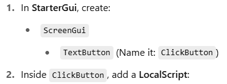
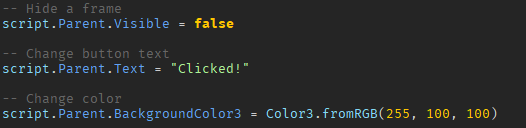
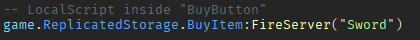
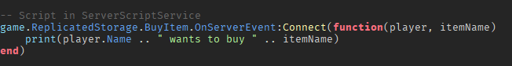
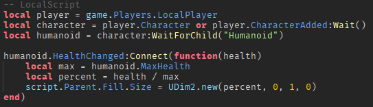
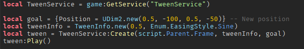
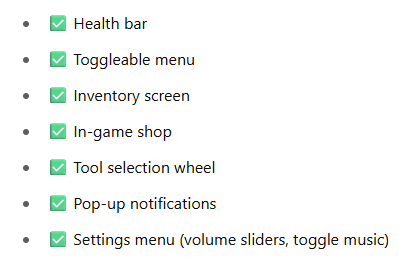

| Introduction to Roblox Studio | Beginner Guide to Scripting | Advanced Guide to Scripting | Gui Guide |
|---|
GUIs (Graphical User Interfaces) are visual elements players interact with — like buttons, health bars, text, and menus.
They appear to each player individually (on the client side), so you'll usually use LocalScripts.
🌟 Goal: A button that prints something when clicked

You can use scripts to change size, text, visibility, color, etc.
Use layout tools:
UIListLayout: Stacks items vertically or horizontally
UIPadding: Adds space inside frames
UIScale: Makes UI fit all screen sizes
Place them inside Frames to auto-organize buttons, shops, inventory slots, etc.
GUIs run on the client, but sometimes you need to send actions to the server (e.g., buy an item).
Use RemoteEvents:
Example: Buying an item
 Setup:
Add a ScreenGui with a Frame named HealthBar (set BackgroundColor to red).
Inside that, add another Frame named Fill (set to green, and size to {1, 0}, representing 100%).
Script:
Use naming clearly (CloseButton, InventoryFrame, ShopUI)
Keep your GUI layout inside StarterGui
Use ModuleScripts to handle logic if your UI grows
Use UI constraints like UIScale for cross-device compatibility
You can make frames slide in/out or fade using TweenService.
Here are some GUI mini projects you can try:
